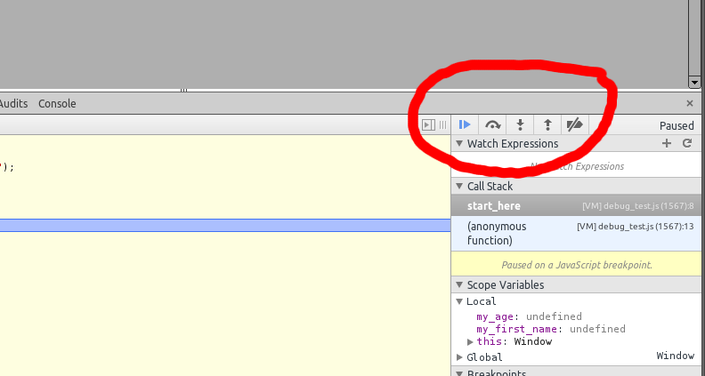

Wrestling with JavaScript
Dr Anton Gerdelan - Mon 25 Nov 2013. gerdela@scss.tcd.ie
Consoles
var my_var = 10;
alert ("The value of my_var is " + my_var);
- alert() is okay, but can be annoying
- for more information use the browser's console
Chrome
Firefox
Internet Explorer
Print to Console
var my_var = 10;
console.log ("The value of my_var is " + my_var);
- Try this now, on this page. You can click on the link beside the message to
find out where (in what file and what line) the console log was called
- This is even more useful if you are printing an error message
function do_something_else (value) {
if (value > 10) {
console.error ("ERROR: The value is too big!");
}
}
function do_something (value) {
do_something_else (value);
}
var my_var = 11;
do_something (my_var);
- console.error() has a drop-down that tells you the whole trace of
function calls that lead to the error message, and what line they were called
from.
- Try this in the console
Debuggers
I have some code in this page that is supposed to take my first name as a
parameter, and print my full name here by adding a "Dr" to the front and
"Gerdelan" to the back. It's not working though - what I get is "Anton" when it
should say "Dr Anton Gerdelan".
My name is:
Breakpoints and Stepping Through Code
- Switch from the "console" to the tab that has your web page's files. This
is called "Sources" on Chrome, and "Scripts" on most of the others. Firefox
has a "Debugger" tab next to the console.
- Open the debug_test.js file inside the source/debugger tab
- You might need to click on one of the side buttons to bring up the list of
files:
- Find the function called function start_here ()
- Click inside the margin on line 8 (the first line in the function
- This adds a marker called a breakpoint:
- Refresh the page. The execution of the JavaScript code will stop at
the break-point
- Now you have a few options;
- step over - execute one more line but speed over any functions calls
- step into - execute one more line and also step through any called functions
- step out - speed through the current function then pause
- continue - un-pause until the next break-point is found

- Press the step into function until the code finishes
- You can watch the code execute one line of JavaScript at a time
- But how can we spot the error?
Watch List
- Refresh and step through the code again, but this time wait when it gets to
line 4 (where it finally puts the name on the page).
- On the right-hand side there is a list of local variables "in scope"
- name is there and it just contains "Anton"
- But clearly we put my whole name together on line 2?
- Can you see the mistake?
- I made a typo and used a capital "N" for "name".
- JavaScript created a new variable called "Name", even though I didn't put
var Name!
- It didn't even warn me!
- If you look in the variable "Scope" on the side of the debugger, you can
expand the "this" object.
- If you scroll down you'll find the "Name" variable there
- Which means that we have a "name" and a "Name" variable - woops!